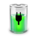
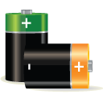

中威科技出品
2016年4月
总体平稳
稳中有优
稳中提质
动力转换
如何准确看待2015年全市经济情况
经济运行有四个方面亮点
总体平稳
1
速度稳
就业稳
新增就业人数继续
保持
在8万人以上
城镇登记失业率1.92%
物价稳
稳中有优
2
重点指标增幅居全省前列
全省位次
1
2
3
4
5
6
7
服务业税收增幅
工业用电量增幅
金融机构本外币
贷款余额增幅
一般公共预
算收入增幅
出口总值增幅
工业应税销
售收入增幅
进出口总值增幅
稳中提质
3
反映经济发展质态的结构指标
呈现“六个提升”
0.36个百分点
0.1个百分点
1.6个百分点
1.8个百分点
9个百分点
1.4个百分点
动力转换
4
单位GDP能耗

4.5%
综合能耗

2.4%
超过全省平均水平
达到部分苏南城市
水平
看待2015年南通经济发展，必须跳出总量看质量，跳出指标看趋势，在未来的发展阶段，必须确立以提升发展质量为导向的目标，不断促进经济结构的优化和发展质量的提升。2016年，随着中央、省、市积极推进供给侧改革，相信我市经济运行的质量将得到进一步提升。